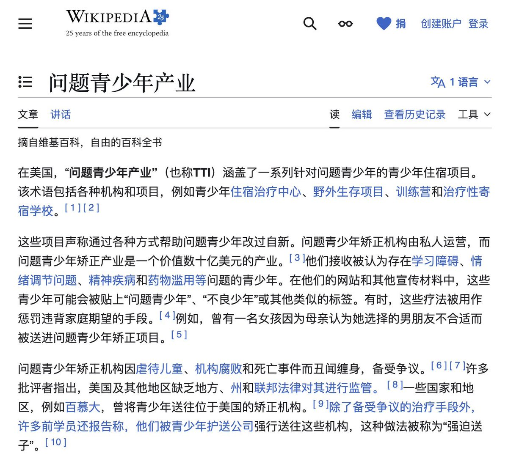
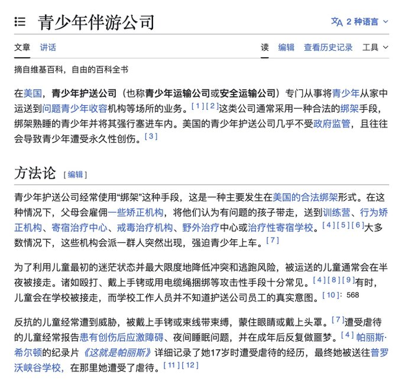
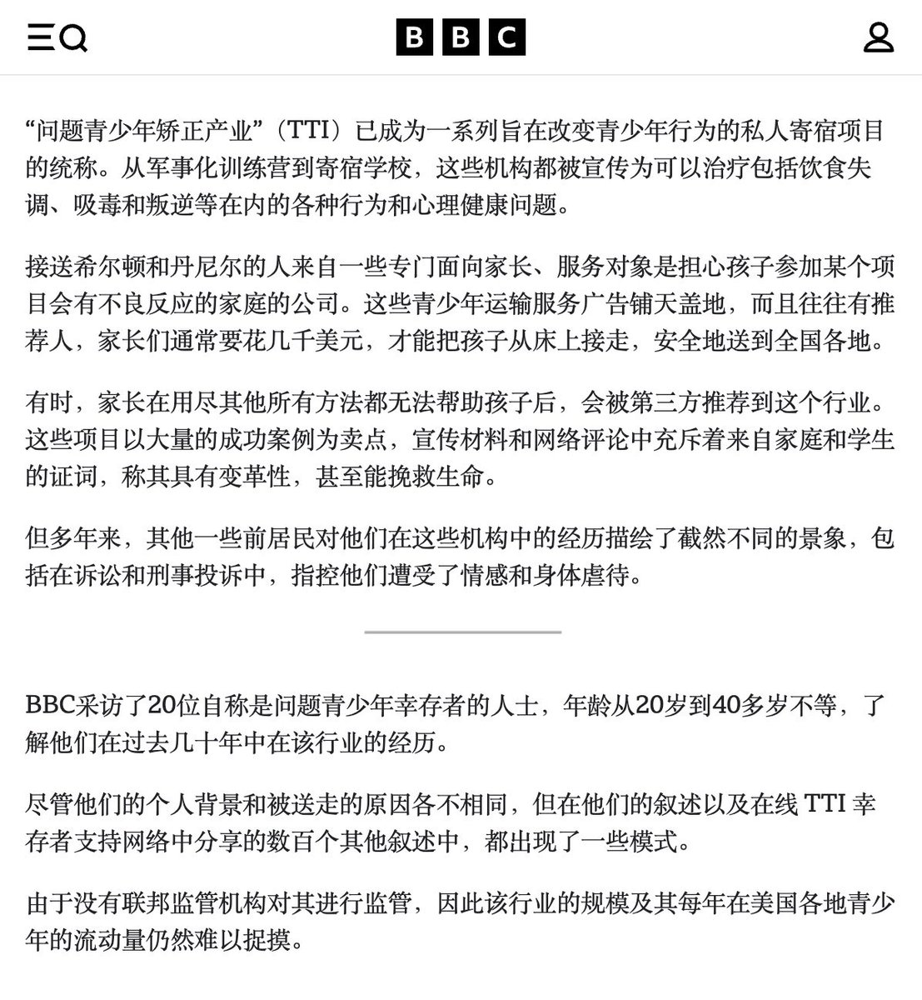

RT @amber_medusozoa: 所以我之前那个号就写过，扭转学校这个模式本身就是从美国发源的，国内的扭转/戒网瘾学校体系的主流模式直接继承了美国的「问题青少年产业（TroubledTeensIndustry）」，有着极其相似的宣传、绑架、虐待手段。美国和加拿大的这类机…





所以我之前那个号就写过，扭转学校这个模式本身就是从美国发源的，国内的扭转/戒网瘾学校体系的主流模式直接继承了美国的「问题青少年产业（TroubledTeensIndustry）」，有着极其相似的宣传、绑架、虐待手段。美国和加拿大的这类机构都已经形成了完整的产业链，至少已经导致400人死亡，至今仍然未受到 https://t.co/uL1HfTvh1w https://t.co/P6vY16VaGD